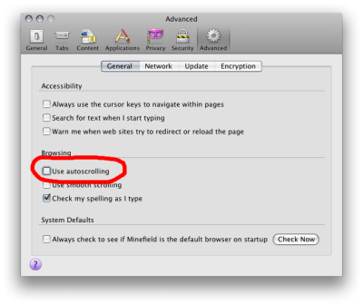

Navigation
X3DOM provides some generic interaction and navigation methods. Interactive objects will be handled by HTML-like events. Navigation can be user-defined or controlled by specific predefined modes.
Currently X3DOM supports the following interactive navigation modes: Examine, Walk, Fly, Look-at, Look-around, Turntable,
Game and Helicopter.
Non-Interactive movement encompasses the functionality of: Resetting a view, showing all or upright the view.

Changing navigation mode with Javascript
Of course you can switch modes not only by pressing the shortcuts/hotkeys but also with Javascript. The current mode is set as param type to the NavigationInfo node.
<x3d width='500px' height='400px'>
<scene>
<navigationInfo type='"walk" "any"' id="navType"></navigationInfo>
</scene>
</x3d>
Type can be a single mode or also hold an array containing additional fallback modes if the favored mode is not available. You can change the value by setting a new type to this node.
document.getElementById('navType').setAttribute("type", currentMode);
Interactive camera
Examine
Activate this mode by pressing the "e" key.
| Function | Mouse Button |
|---|---|
| Rotate | Left / Left + Shift |
| Pan | Mid / Left + Ctrl |
| Zoom | Right / Wheel / Left + Alt |
| Set center of rotation | Double-click left |
Walk
Activate this mode by pressing the "w" key.
| Function | Mouse Button |
|---|---|
| Move forward | Left |
| Move backward | Right |
Fly
Activate this mode by pressing the "f" key.
| Function | Mouse Button |
|---|---|
| Move forward | Left |
| Move backward | Right |
Helicopter
Activate this mode by pressing the "h" key.
To look downwards/upwards and to move higher/lower use the keys (8/9 and 6/7).
| Function | Mouse Button |
|---|---|
| Move forward | Left |
Look at
Activate this mode by pressing the "l" key.
| Function | Mouse Button |
|---|---|
| Move in | Left |
| Move out | Right |
Turntable
The allowed interactions are the same as in examine mode. With the third and fourth value of the typeParams-Parameter you can set the minimal and maximal vertical rotation angle. Accepted values are between 0 and PI, starting from +Y (0) down to -Y (PI).
| Function | Mouse Button |
|---|---|
| Rotate | Left / Left + Shift |
| Pan | Mid / Left + Ctrl |
| Zoom | Right / Wheel / Left + Alt |
| Set center of rotation | Double-click left |
Game
Activate this mode by pressing the "g" key. To look around (rotate view) move the mouse.
| Function | Key |
|---|---|
| Move forward | Cursor up |
| Move backwards | Cursor down |
| Strafe left | Cursor left |
| Strafe right | Cursor right |
Non-interactive camera movement
| Function | Key |
|---|---|
| Reset view | r |
| Show all | a |
| Upright | u |
Mid-Button troubleshooting
If the web page has scroll bars and autoscrolling is enabled, Mid-Button currently does not work correctly. As a workaround, you can disable autoscrolling by unchecking the "Use autoscrolling" checkbox in the Firefox browser options, as is shown in the screenshot below (for the Firefox case).

 Display example HTML file
Display example HTML file View example page source
View example page source Download full example (.zip archive)
Download full example (.zip archive)